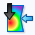
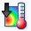
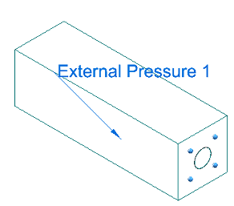
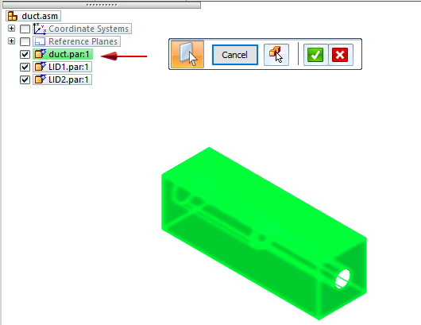
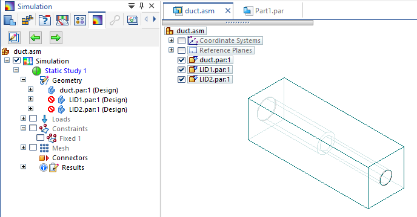
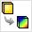

External loads (imported loads)
For an assembly model, you can use the commands on the Simulation tab→External Loads group to import the results file from an external program, for example Simcenter FLOEFD for Solid Edge, and apply them as boundary conditions to your Solid Edge Simulation study. These external loads can be used in linear static and thermal studies, in coupled studies, and in harmonic response studies. External loads are only available when the study Mesh type is set to Tetrahedral.
-

Import Fluid Pressure—Transfers the fluid flow mesh and pressure conditions from a solved flow analysis to your active study. -

Import Fluid Temperature—Applies the fluid flow mesh and temperature results from a solved flow analysis to your active study.

To learn how to use these commands, see Use fluid flow results in a linear static or thermal study.
Special considerations when using FLOEFD imported loads
-
If you open an assembly containing lid parts (LID*.par) added by Simcenter FLOEFD for Solid Edge, we recommend that you exclude the lids from the Solid Edge Simulation study geometry selection set. Lids do not play a role in the analysis, and they generate a Nastran error message while solving.
To exclude the lids, do either of the following:
-
When the Simulation tab→Geometry group→Define command is active and you are selecting the study geometry to analyze, omit the lid geometry from the selection set.

-
Alternatively, you can suppress the lid parts from being considered in the study using the Suppress command on the shortcut menu in the study navigator pane.

-
-
If your assembly document contains a family of assemblies, you must generate the FLD files in Simcenter FLOEFD for Solid Edge using the Export Results to Simulation command

on the Flow Analysis tab, as explained in Use fluid flow results in a linear static or thermal study. This is because a FOA has special file naming conventions, which must be accommodated in the flow analysis output (*.fld) file names that are imported into Solid Edge Simulation.
How do I
Define a loadActivity: Apply a bearing load
Activity: Apply a centrifugal load
Activity: Apply a torque load
Activity: Apply a body temperature load
Learn more
Creating and using loadsLoad labels and symbols
Structural and body loads
Thermal loads
Loads directional steering wheel
Look up more details
Loads command barThermal Load Options dialog box
Radiation Load Options dialog box
Color dialog box
Graphic Symbol Size dialog box